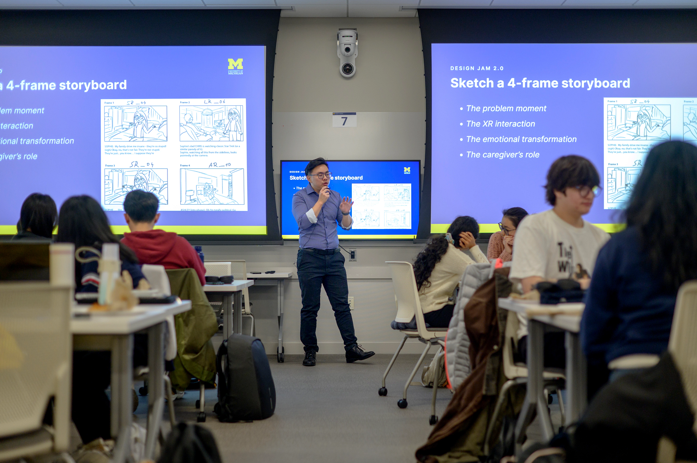

Build Trust from the Beginning
First impressions shape the trajectory of a partnership. The starting phase is where abstract project ideas become structured commitments. Clear outreach, a purposeful kickoff meeting, and shared agreements can create psychological safety within your team and trust with your client or community partner.
Early ambiguity is normal. Your goal is not to eliminate every unknown before work begins, but to establish a process for asking questions, documenting decisions, and revisiting the plan together.

Starting-Phase Objectives
- Partner communication: Draft clear, professional outreach that introduces the team and proposes a practical next step.
- First meetings: Structure a productive kickoff conversation that identifies goals, roles, constraints, and project boundaries.
- Formalizing agreements: Document team commitments, communication norms, decision-making practices, scope, and deliverables.
- Shared understanding: Confirm what success means to the partner, the students, and the course or program.
Before You Make First Contact
- Review the partner's mission, audience, services, and public communications.
- Agree on one primary student contact and one backup contact.
- Write a concise introduction that names the course or program, the team, and the known project purpose.
- Offer several meeting times and state the expected meeting length.
- Prepare two or three important questions without asking the partner to solve the entire project by email.
- Proofread names, titles, dates, links, tone, and accessibility before sending.
Kickoff Meeting Agenda
Send the agenda in advance so every participant can prepare or request changes. During the meeting, assign one facilitator and one note taker.
- Welcome and introductions: Share names, roles, and what each person hopes to contribute.
- Partner context: Invite the partner to explain the organization, community, audience, history, and current need.
- Project purpose: Discuss the problem or opportunity without assuming a specific solution.
- People and impact: Identify who will use, maintain, or be affected by the work.
- Scope and constraints: Clarify deliverables, deadlines, available data, technology, privacy, and approval processes.
- Ways of working: Agree on meeting cadence, communication channels, response expectations, feedback, and decision-making.
- Next steps: Name each action, owner, and due date. Confirm the date of the next check-in.
Create a Shared Working Agreement
A useful agreement is specific enough to guide behavior and flexible enough to be revisited when circumstances change. Record decisions about:
- Team roles, responsibilities, and backup plans
- Meeting attendance, preparation, and note-taking
- Communication channels and expected response times
- How the team will make decisions and resolve disagreements
- How and when the partner will review work
- What information is confidential and how data will be protected
- How scope changes will be proposed, evaluated, and approved
- What files, documentation, or training will be included in the final handoff
Featured Starting Resources
- Initial Client Email Examples - Adapt sample language for a clear and professional first contact.
- Initial Client Meeting Sample Agenda - Use a step-by-step structure for a professional kickoff conversation.
- Ginsberg Center Campus-Community Partnerships Toolkit - Review principles for reciprocal, respectful community relationships.
- Student-Client Partnership Guide - Clarify expectations and deliverables across a student-client partnership.
- Student Organization-ELO Partnership Agreement Template - Document roles shared by student teams and ELO.
- Student Organization Engaged Learning Leaders Schedule - Review key milestones, deadlines, and submission dates.